With the climate changing rapidly, we decided to do what we can to mitigate the process. After discussing, we decided to approach this by installing solar panels on our new campus's roof.
In order to know better about the severity of climate change, we did a bunch of researches individually. I personally did a reseach on daily activities that produce the most carbon:
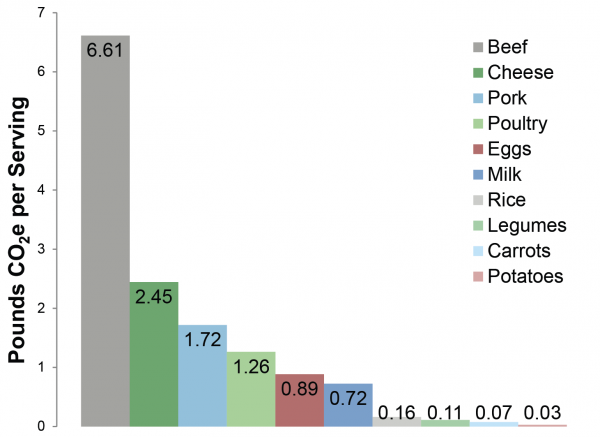Detailed information can be found here
We also opened up a few sharing sessions on climate change facts. In particular, Jaguar talked about his research on strategies needed for the climate to be mitigated under 1.5℃, along with how much energy we can use from the environment around us:
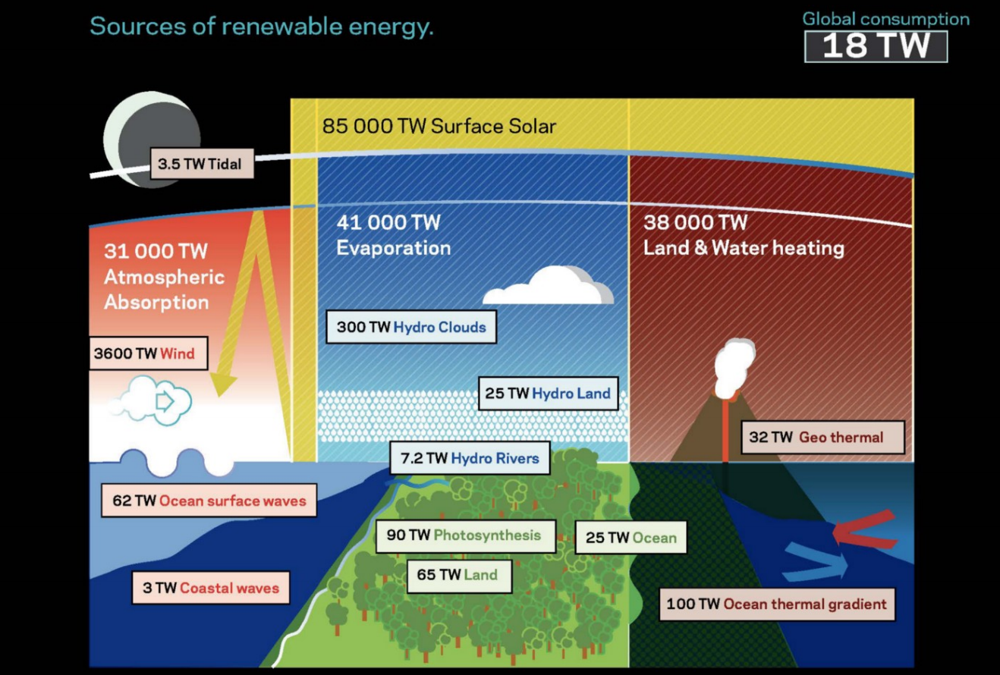Later in my English class, I also tried to analyze elements in the novel we read, pointing out signs and symbols of the relationship betwen human and nature in that piece of literature. Paper: https://moonshotacademy.sharepoint.com/sites/IPClimateMitigation/_layouts/15/Doc.aspx?sourcedoc=%7BD60EB12C-BF04-46D1-8F8C-5036835592CB%7D&file=Final%20Paper.docx&action=default&mobileredirect=true.
Knowing what lies before us if we do not take any action, we dived into our work and split into two groups: Engineering and Finance. I took on the role as one of the Engineering Leads.
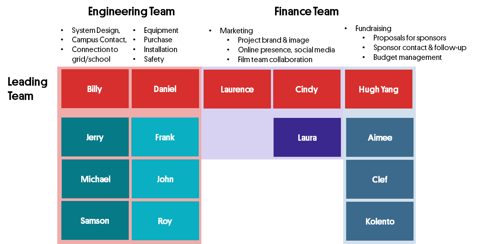We first went into researches of different topics and made + iterated small tutorial videos on each of them, aiming for guiding other people also interested in installing solar panels and contributing to climate:
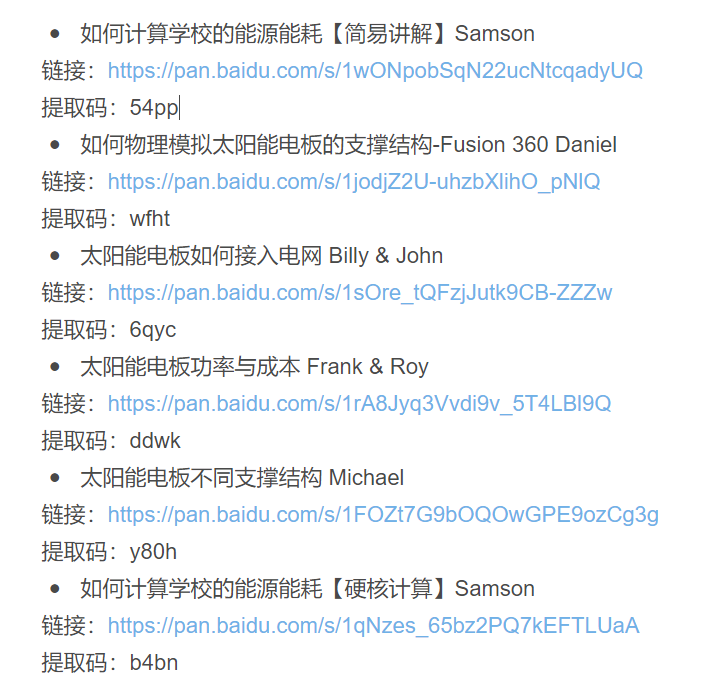Video Links here
Comments and Feedback we gave each other: https://shimo.im/sheets/JDHPhyxCJDYGqtqd/MODOC
I personally made a video talking about physical simulation using Fusion 360 (used in designing support of solar panels in the future):
In the meantime, the leader group (called "Lead Circle") is constantly talking about the project outcome, drawing out Gantt chart, designing workshops, sessions, and checkins every week. This is a screenshot of the final version of our Gantt Chart:
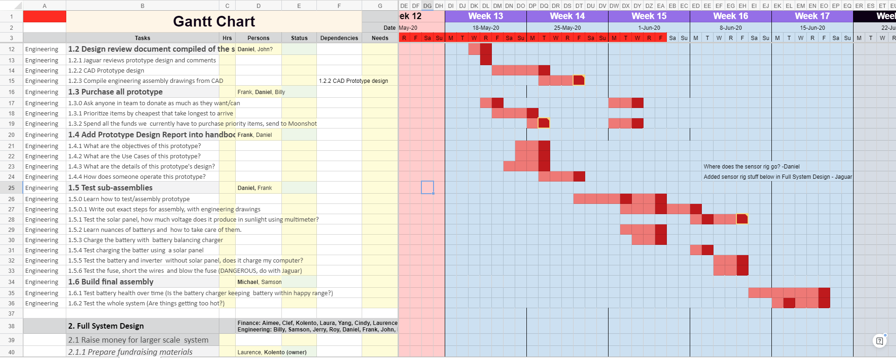Full Gantt Chart: https://shimo.im/sheets/VOAWVaW1y8H8FYkZ/CxTq3
Our talking about next steps and questions:
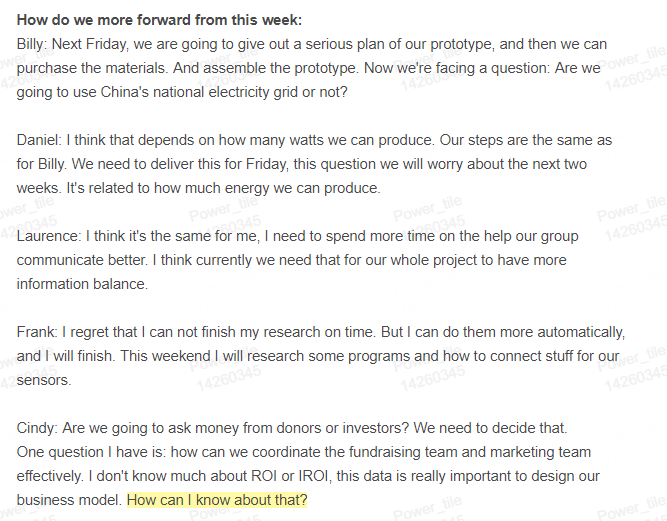All meeting notes: https://shimo.im/folder/7OAYV4JRmWcMsb3D (do not recommend, too much information and trivia)
We also have a planner tracking what everyone is doing:
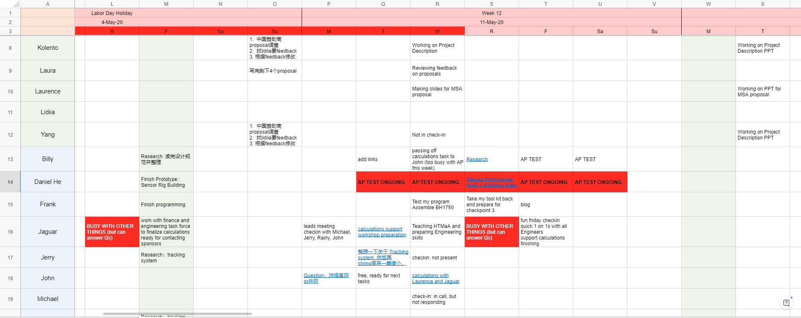In order to push exponential learning and learn from each other constantly, we also use the almighty MATRIX to document our learning and our evidence throughout the project:
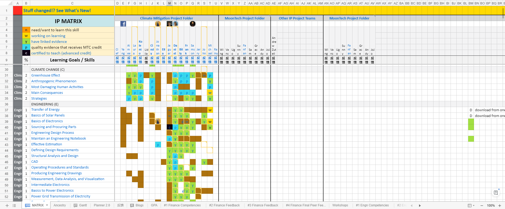...where my row is in row N. Green stands for "have linked evidence", and blue stands for "have quality evidence that receives MTC credit". Each block in this chart is linked to a document, some screenshots, some files, or some videos showing what I did.
MATRIX https://shimo.im/sheets/VOAWVaW1y8H8FYkZ/MODOC
After building the teams and went through research, we decided to dive more into estimations and calculations. To facilitate this process, I did a workshop on how to do research and identify resources. Video can be found https://moonshotacademy.sharepoint.com/sites/IPClimateMitigation/_layouts/15/SkySyncRedir.aspx?Type=2&ResourceId=9b72c1854d014a4693152fd7d13d6f48.
I personally did an estimation on energy production on our solar panels based on data from project Google Sunroof. The estimation is not very accurate because the data was taken from the US, and I used the relationship between radiation as well as the number and power of the solar panels and the final power generation + the data of Beijing's solar radiation to complete the estimation.
I also participated in the estimation of power consumption for the new campus. The result was proved by architects that design the new campus, which is sooo awesome.
All of our calculations can be found https://shimo.im/sheets/r4ArzBePeVTYFgAV/QjPjG.
After doing these basic calculations, we decided to move on the prototyping design. We decided to first work out a small prototype for solar panels. However, on our way, we realized that when we are doing the full system design, we need specific information on the solar radiation at different parts of our roof in order to determine the needed size of battery, inverters, and various other components. Therefore, we decided to form a new group designing a "sensor rig" aiming for collecting data of solar radiation for further data analysis and estimation.
I was in charge of the sensor rig prototyping group, as well as designing the rig + modelling the parts.
Sketch for sensor rig:
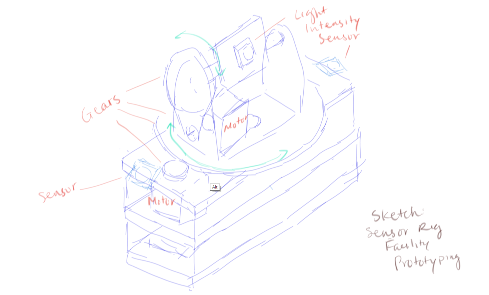Modelling of sensor rig using Fusion 360:
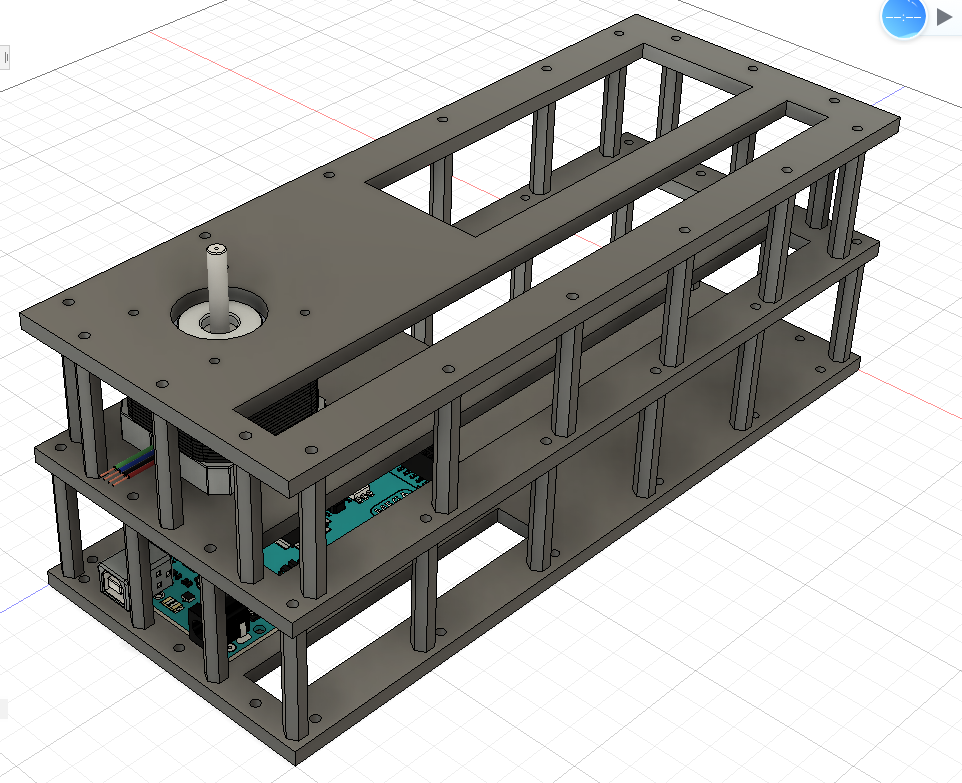For the control program, I also built the skeleton of the program (logistics, function calls, branches, comments, etc.) and Frank, our other programmer, was coding the actual controlling of each part. I also conducted some code review with him after he finished coding.
Peek to "code skeleton" I wrote for the sensor rig:
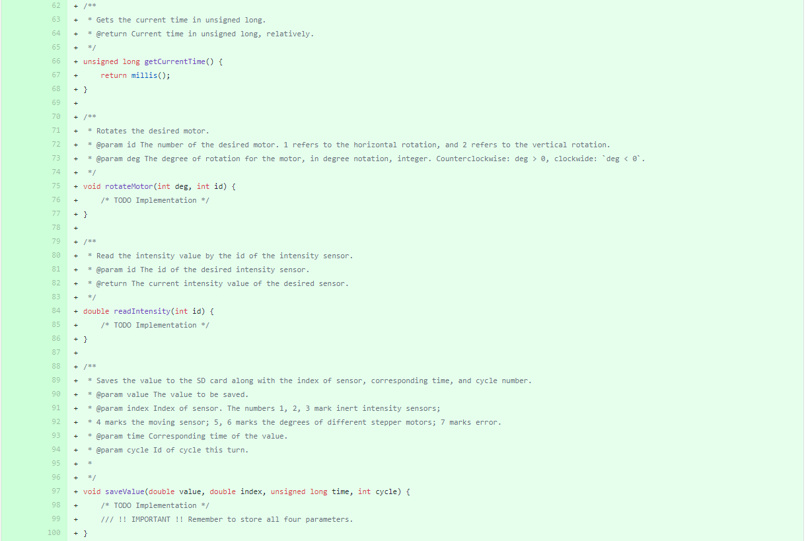 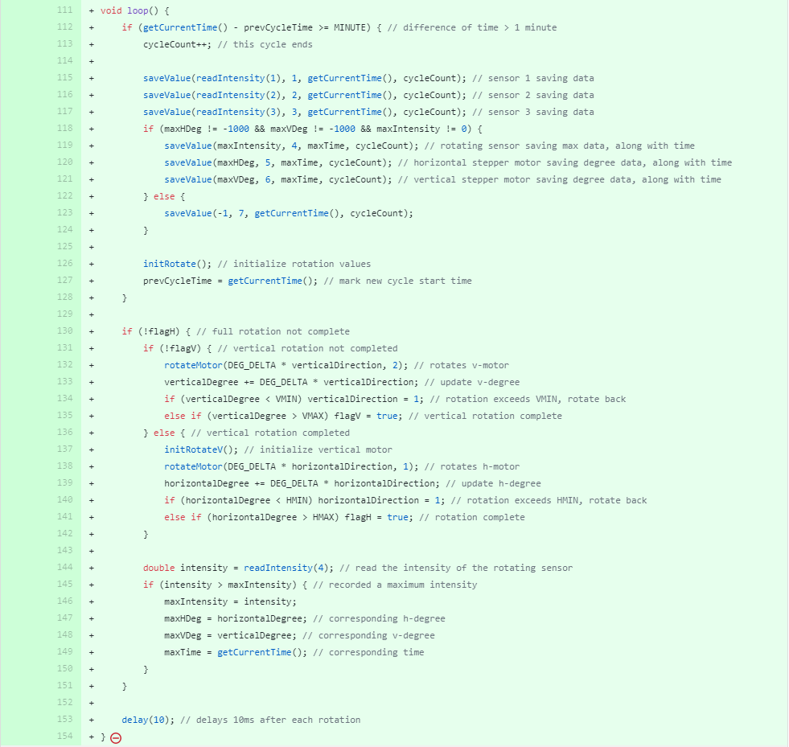Detailed Information on Sensor Rig: https://shimo.im/docs/8l3aVWl0EKc9F2qy#anchor-hPJy
After we are three fifths into our project time, we realized that we are not able to go back to school before the Interdisciplinary Project course ends on June 18th. We decided to reform our expectations and criterize our final outcome. We decided to decrease outcome for both teams, but we will together compile a handbook to facilitate work done on this project next semester, as well as people with similar goals.
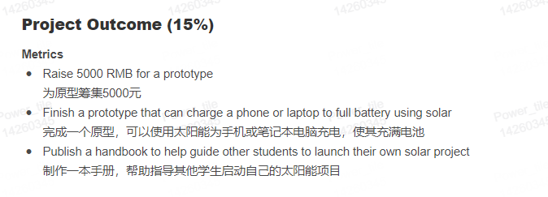Meeting notes, where this decision is made (contains project analysis, current risks, opportunities, and everyone's voice): https://shimo.im/docs/GokLVrJDo2iBF032
We also made a WBS (work breakdown structure) mindmap to better manage our project:
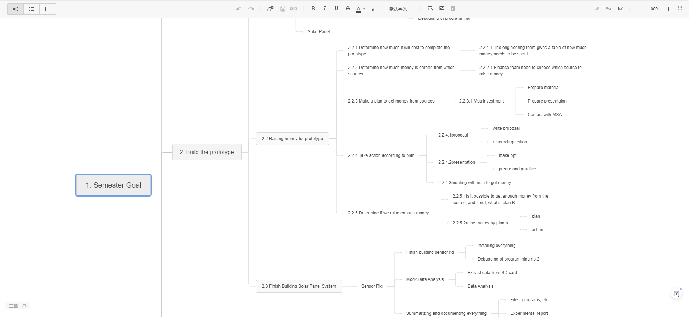Knowing that we are not able to finish designing and installing the full system + having the whole sensor rig group getting a bit tired, I decided to move my entire group into the realm of full system design. Meanwhile, we received the bad news that the area reserved for solar panels on the new campus is decreased drastically from 500 square meters into only about 120 square meters. I joined the group and helped analyzing the situation, along with new + missing calculations we need.
Part of my analysis:
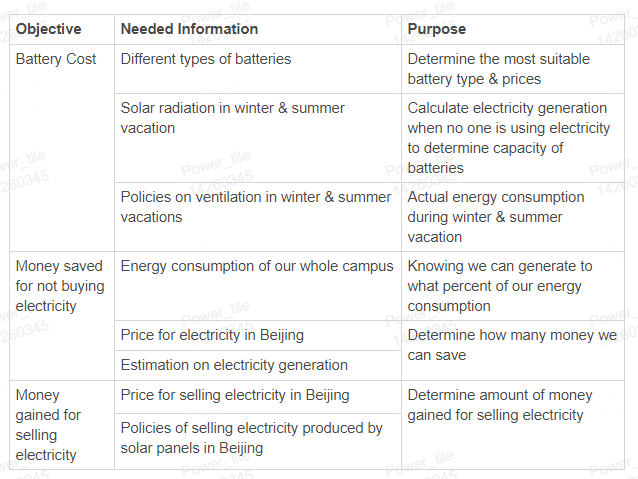My sending out responsibilities:
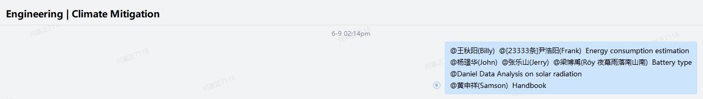Whole logic and analysis can be found here: https://shimo.im/docs/8l3aVWl0EKc9F2qy#anchor-PbAe
Estimation with only 120 square meters: https://shimo.im/sheets/r4ArzBePeVTYFgAV/SjUNT
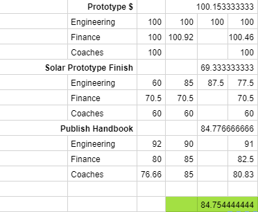In the end, we did not get back to Beijing. For the engineering part, we signed the contract with the company we collaborated with, but was not able to assemble and test the solar panel prototype. We rated our project completion rate at a percentage of 84.7544%.
It is certain that we will continue working on this project in next semester, maybe as a makerspace project.